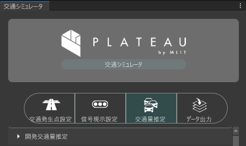
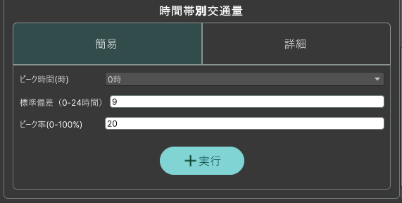

開発交通量推定
開発エリアおよび開発条件を指定し開発エリアに係る発生集中量を推定し開発OD交通量ファイルを出力します。

推定する開発交通量の設定
推定するための開発エリアの条件を指定します。
開発エリア
- エリア指定ボタンをクリックし、シーンビュー上で開発エリアとするゾーンをクリックします。
既存OD交通量参照フォルダ
- 読み込みボタンをクリックし、既存OD交通量ファイルのあるフォルダを指定します。

時間帯別交通量設定
時間帯別の交通量は簡易タブ詳細タブの２通りの方法で設定することができます。
簡易
時間ごとの交通量の比率をガウス分布により設定することができます。

詳細
時間ごとの交通量の比率をスライダーで時間ごとに細かく設定することができます。

- 「実行」をクリックすることでシミュレーション条件をもとに推定され出力されます。